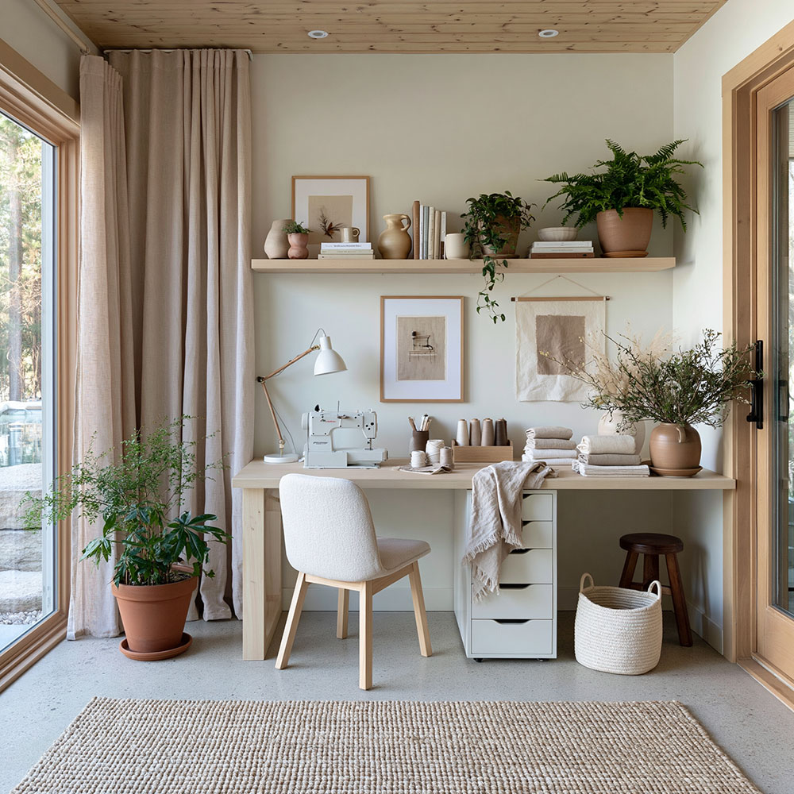
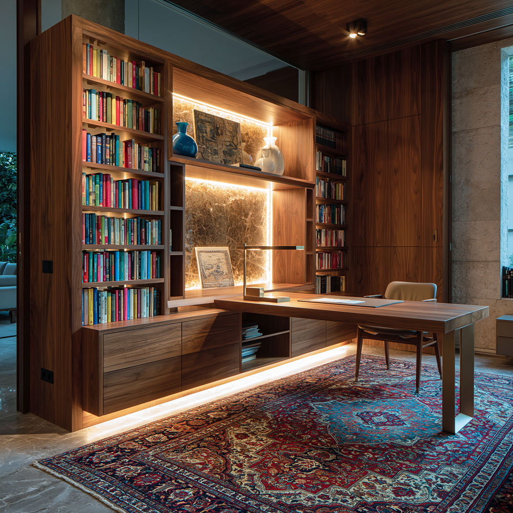
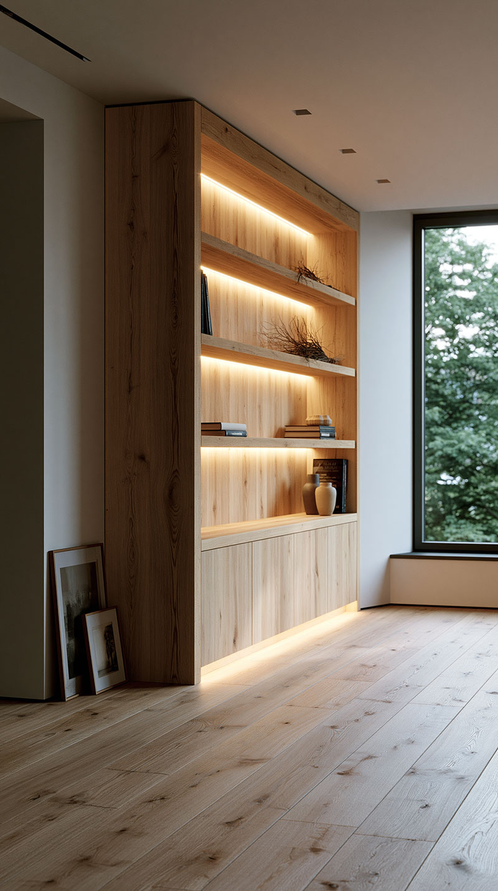
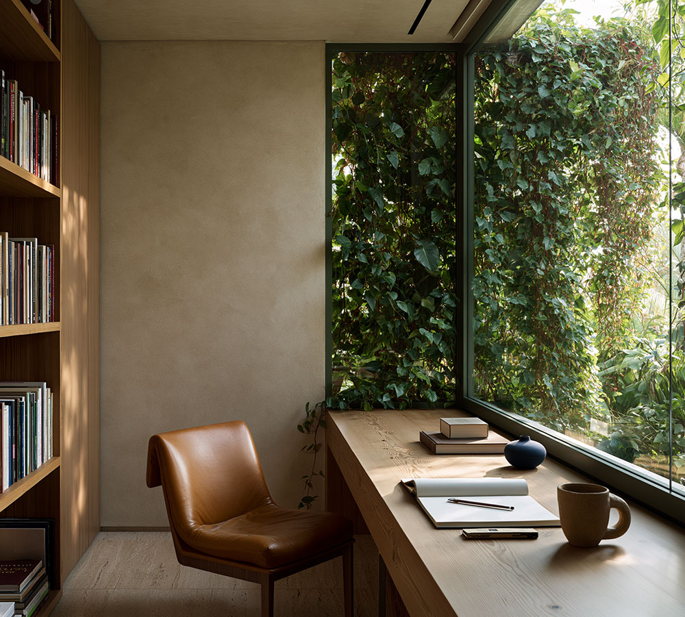
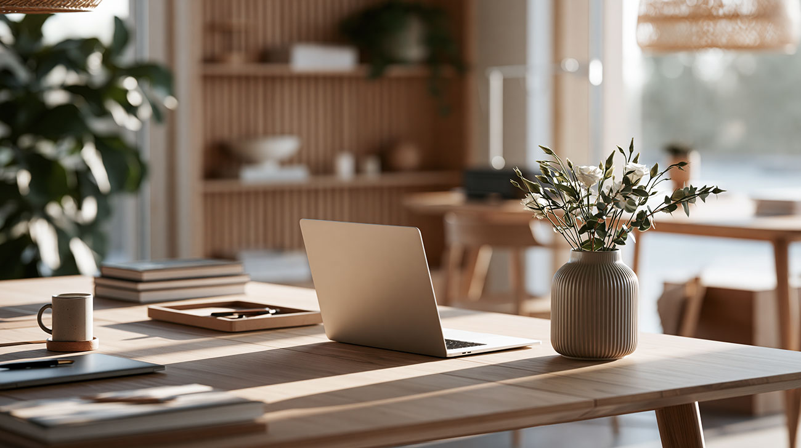
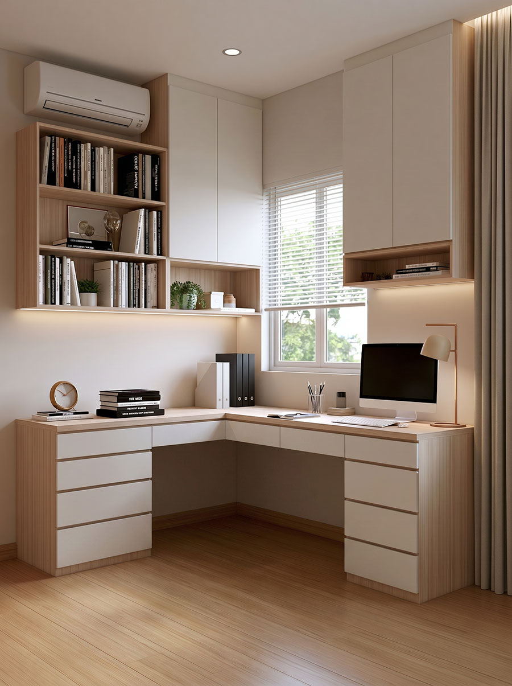
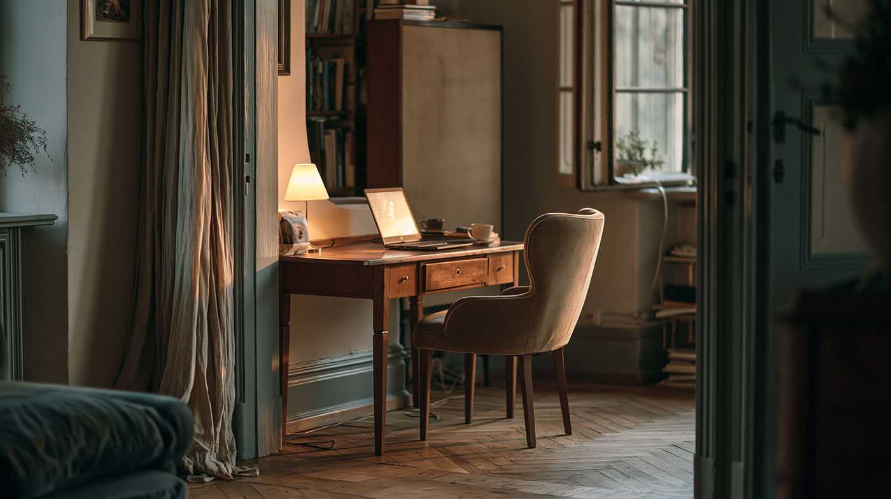
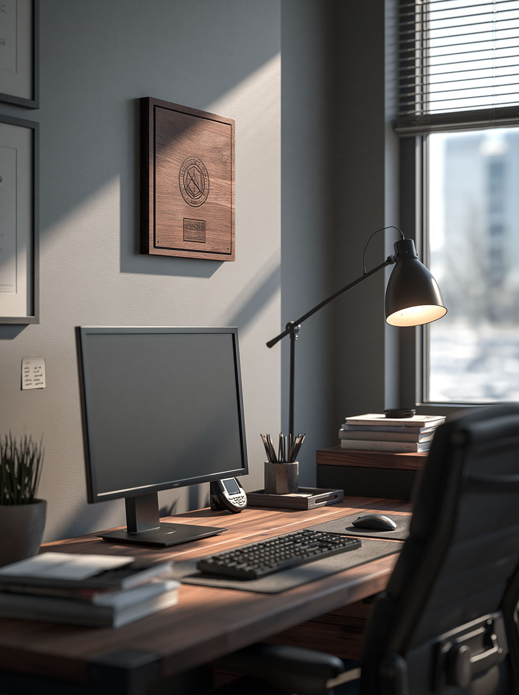
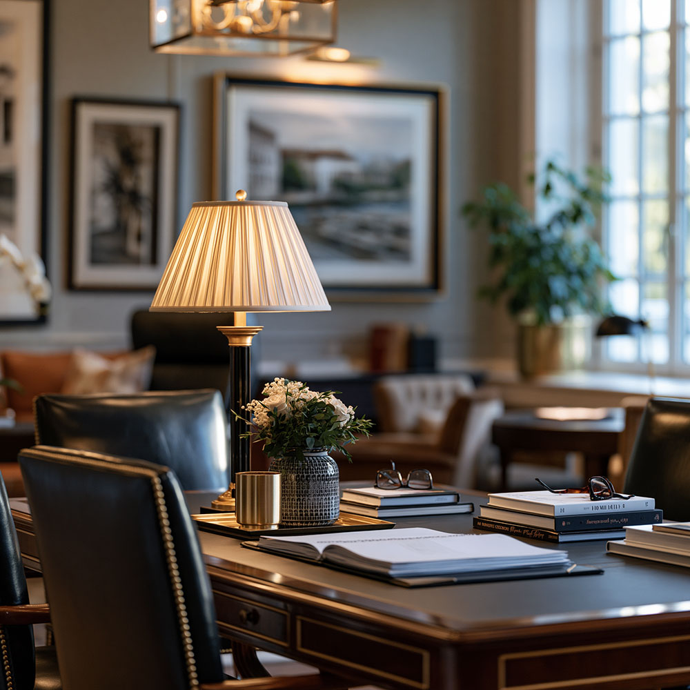

פינת עבודה מוארת ליד החלון
אור טבעי משנה את כל חוויית העבודה. כשהשולחן ממוקם נכון, גם פינה קטנה יכולה להפוך למקום שמזמין לשבת.
העבודה נכנסה הביתה, אבל הבית לא צריך להפוך למשרד. תכנון נכון יוצר מקום לריכוז, לאחסון, לאור ולאווירה, בלי לוותר על תחושת הבית.
משרד ביתי טוב הוא לא רק שולחן וכיסא. הוא נקודת מפגש בין עבודה, משפחה, אור, רעש, אחסון והרגלים יומיומיים.
לפעמים יש חדר שלם שאפשר להקדיש לעבודה. לפעמים יש רק נישה, מרפסת שנסגרה, קיר פנוי בספרייה או פינה בחדר השינה. בכל אחד מהמקרים השאלה היא אותה שאלה: איך יוצרים מקום שמאפשר לעבוד, אבל עדיין מרגיש חלק טבעי מהבית.
כשנגרות מתוכננת נכון, היא יכולה להגדיר את אזור העבודה בלי לבנות קירות. ספרייה, חיפוי עץ, תאורה ושטיח יכולים לייצר גבול רך בין הבית לבין העבודה.
זה פתרון שמתאים במיוחד לבתים שבהם רוצים פינת עבודה רצינית, אבל לא רוצים לאבד את החום, האופי והתחושה הביתית.

במקום לבחור סגנון מתוך קטלוג, כדאי להתחיל מהדרך שבה עובדים. יש מי שזקוקה לאור טבעי ושקט, יש מי שצריך הרבה אחסון, ויש מי שמקבל לקוחות בבית וצריך חלל שמרגיש ייצוגי.

אור טבעי משנה את כל חוויית העבודה. כשהשולחן ממוקם נכון, גם פינה קטנה יכולה להפוך למקום שמזמין לשבת.

מדפים, תאורה וחומרים יוצרים רקע מסודר ומכובד לפגישות, לשיחות וידאו ולעבודה יומיומית.

מרפסת שנסגרה, חלון גדול או פינה עם מבט החוצה יכולים להפוך את העבודה בבית להרבה פחות סגורה.

אלון מולבן, קווים נקיים ואור רך יוצרים סביבת עבודה שקטה, נעימה ומתאימה לבית מודרני.

גם פינה קטנה יכולה לעבוד מצוין כשמתכננים מראש אחסון, עומק שולחן, נקודות חשמל ואפילו מקום למזגן עילי.

לא תמיד עובדים משמונה עד חמש. לפעמים פינת העבודה צריכה לתפקד דווקא בערב, באור חם ובשקט של הבית.

גוונים עמוקים, עץ כהה ותאורה מדויקת יוצרים תחושה גברית, רצינית ומרוכזת יותר.

כשמקבלים לקוחות או מנהלים פגישות מהבית, החלל צריך לשדר אמון, סדר ורמה מקצועית.
נגרות יכולה ליצור הפרדה בלי לסגור את החלל. זה פתרון טוב לבית שרוצה גם עבודה וגם תחושת מרחב.
הטעות הנפוצה היא להתחיל מרהיט. בפועל, כדאי להתחיל מהשימוש: כמה שעות עובדים, האם יש פגישות בזום, כמה אחסון צריך, מה רואים ברקע, איפה האור נכנס ואיפה עוברים בני הבית.
משרד ביתי לא עומד לבד. הוא חלק מהבית, מהעסק ומהאופי של מי שמשתמש בו. לכן נכון לראות איך רעיונות כאלה מופיעים בתוך פרויקטים קיימים: פעם כמשרד בכניסה לבית, פעם כפינת עבודה בסוויטה, ופעם כמשרד מקצועי לעסק.